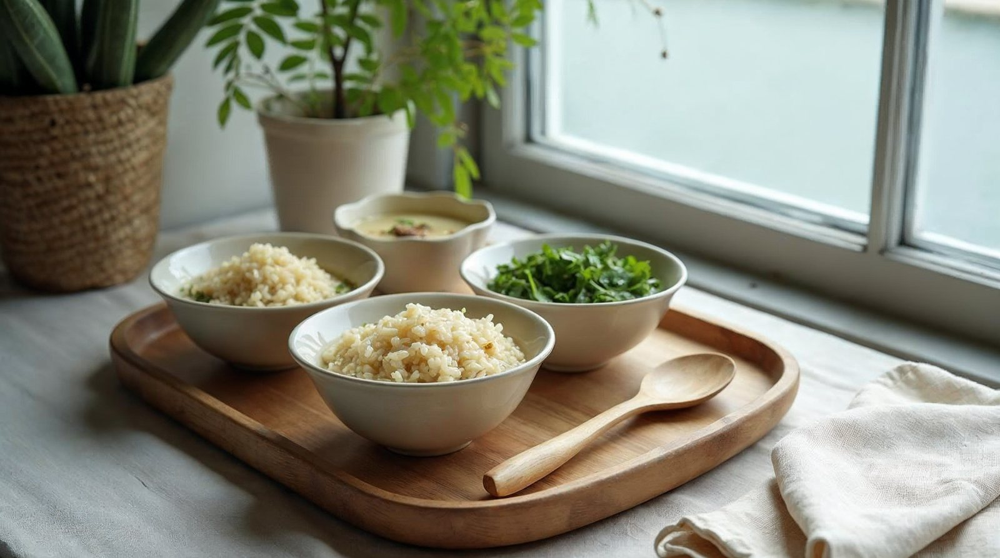
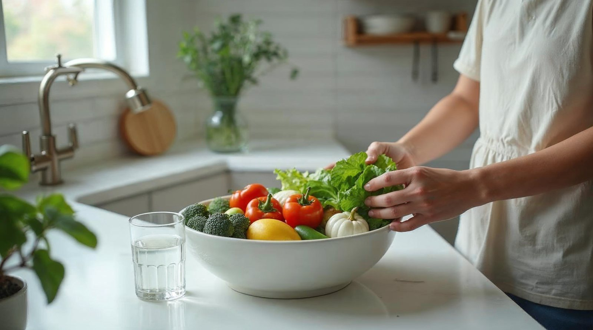
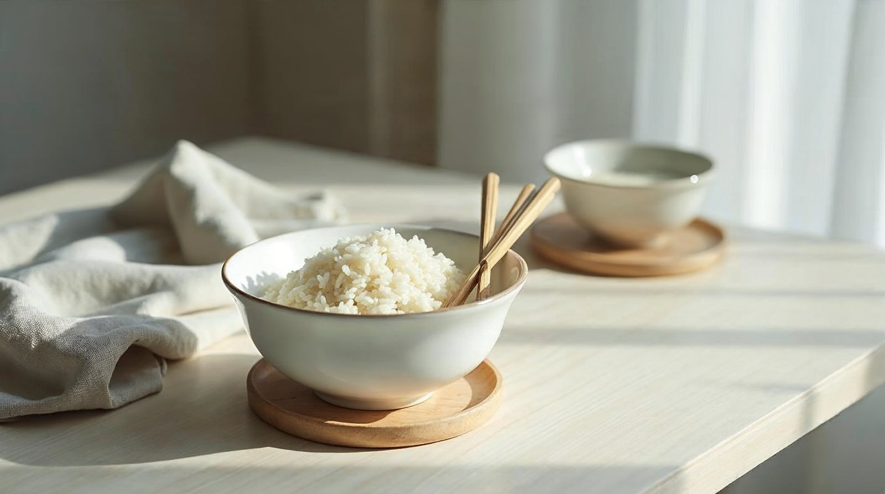

이종호 한의사 감수좋은꿈참사랑한의원 대표원장 (한의사 면허번호 19769)발행 2026-11-23 · 수정 2026-11-26
이 글의 차례
- 왜 체중 숫자만 보지 않을까요
- 배고파서 먹는 것과 '먹어주는' 것은 다른 얘기예요
- 왜 끼니 시간이 들쭉날쭉하면 살이 잘 붙을까요?
- 굶는 다이어트를 권하지 않는 이유
- 저도 이 싸움 중이에요
- 이런 분들이 많이 오세요
- 먼저 이렇게 여쭙니다
- 상담에서 하는 일
- 처음 오시면 어떤 순서로 보나요?
- 인바디는 왜 보나요?
- 한약 상담은 이렇게 해요
- 목표는 숫자보다 생활로 정해요
- 운동은 세게보다 오래, 약하게
- 여러 번 다시 늘어났던 분이라면
- 잠이 식욕을 흔들어요
- 스트레스 받을 때 당기는 음식
- 밤늦게 먹는 한 끼가 가장 쌓이기 쉬워요
- 외식과 회식이 잦다면
- 물과 음료도 함께 봐요
- 부탁드릴 건 딱 하나예요
- 체중계는 이렇게 보세요
- 다시 오시면 무엇을 이어서 보나요?
- 한의원에서 함께 살필 수 있는 경우
- 이렇게 기록해 오시면 상담이 쉬워집니다
- 이런 증상은 먼저 확인이 필요합니다
다이어트 상담의 시작은 몸무게 숫자가 아니라 언제, 무엇을, 왜 먹게 되는지 생활의 흐름을 보는 것입니다. 살을 빼고 싶을 때 먼저 숫자를 보고 서두르는 경우가 많습니다. 좋은꿈참사랑한의원은 다이어트 상담에서 생활 전체를 함께 봅니다.
진료실에서 가장 많이 듣는 말이 있어요. "원장님, 저 진짜 많이 안 먹어요. 그런데 왜 살이 안 빠질까요?" 맞아요. 많이 드셔서가 아닌 경우가 정말 많아요. 그리고 그 말씀을 하시는 분들이 의지가 약해서 그런 것도 아니에요.
먼저 안심하셔도 되는 게 있어요. 나이가 들면서 예전처럼 먹어도 살이 붙고, 예전처럼 굶어도 잘 안 빠지는 건 원래 그래요. 몸이 쓰는 에너지가 조금씩 달라지는 자연스러운 변화거든요. 그래서 예전 방법이 안 통한다고 자책하실 필요가 없어요.
왜 체중 숫자만 보지 않을까요
- 같은 체중이라도 근육과 지방의 비율, 배 둘레에 따라 살필 점이 달라집니다.
- 식욕은 잠, 스트레스, 식사 간격의 영향을 크게 받아 먹는 양만 줄이면 오래 이어 가기 어려운 경우가 많습니다.
- 혈압약, 당뇨약 같은 복용 약과 검진 수치를 함께 봐야 무리 없는 계획을 세울 수 있습니다.
- 짧은 기간에 많이 빼는 방법은 몸에 부담이 될 수 있어 생활에 맞는 속도를 함께 정합니다.
배고파서 먹는 것과 '먹어주는' 것은 다른 얘기예요
저는 상담할 때 이걸 꼭 둘로 나눠서 여쭤요. 배가 고파서 먹는 한 끼가 있고, 배는 안 고픈데 힘내려고, 아까워서, 시간이 됐으니까 '먹어주는' 한 끼가 있거든요.
저도 크림빵을 좋아하는데요, 배가 고플 때 하나 먹는 거랑 배가 부른데 하나 더 먹는 거랑은 몸에서 완전히 다르게 받아요. 배고플 때 먹은 건 몸이 바로 써요. 그런데 배부를 때 먹은 건 쓸 데가 없으니 쌓아 두기 쉬운 거예요.
그러니까 사실은 얼마나 먹느냐보다 배가 고플 때 먹느냐가 더 중요한 경우가 많아요. 많이 안 먹는데 살이 안 빠지는 분들을 보면, 이 '먹어주는' 한 끼가 하루에 한두 번씩 숨어 있는 경우가 꽤 있거든요.
왜 끼니 시간이 들쭉날쭉하면 살이 잘 붙을까요?
왜인 줄 아세요? 회사 월급날이 매달 5일인데, 사장님이 갑자기 "다음 달은 1일에서 15일 사이 아무 때나 줄게" 하면 직원들은 어떻게 할까요? 월급을 편하게 못 쓰고 일단 아껴 두겠죠.
몸도 똑같아요. 다음 밥이 언제 들어올지 예측이 안 되면, 들어온 걸 일단 저장해 두려고 해요. 그게 체지방이에요. 아침을 거르는 날과 먹는 날이 섞이고, 점심이 12시였다 3시였다 하면 몸은 계속 저장 모드에 있는 거예요.
그래서 저는 몇 시에 먹느냐를 일정하게 하는 것, 그리고 끼니 사이에 공백을 두는 것을 중요하게 봐요. 공백이 제일 중요해요. 끼니 사이에 간식으로 계속 채우면 몸이 저장한 걸 꺼내 쓸 틈이 없거든요.
굶는 다이어트를 권하지 않는 이유
한 끼를 아예 굶거나 하루 종일 거의 안 먹는 방법은 처음엔 숫자가 빨리 내려가요. 그런데 몸은 그걸 위기로 받아들여요. 다음 끼니가 언제 올지 모르니 들어오는 걸 더 꽉 붙잡아 두려고 하는 거죠.
그러다 다시 먹기 시작하면 몸이 그 틈에 저장을 늘리기 쉬워요. 그래서 저는 굶기보다 정해진 시간에, 배가 고플 때 먹는 쪽으로 천천히 바꿔 가는 걸 권해요. 느려 보여도 오래 가는 길이에요.
저도 이 싸움 중이에요
이건 제 이야기인데요, 저도 체중과 씨름하고 있어요. 밤늦게 출출하면 야식 생각이 나고, 그걸 참는 게 쉽지 않아요. 저도 그래요. 그래서 다이어트가 얼마나 어려운지, 참는 게 얼마나 힘든지 잘 알아요.
그래서 저는 상담하시는 분께 지키기 어려운 목록을 드리지 않아요. 식단표를 빽빽하게 드리면 처음 며칠은 지키다가, 하루 못 지키면 "역시 난 안 돼" 하고 놓아 버리기 쉽거든요. 사람은 원래 그래요.
이런 분들이 많이 오세요
- 많이 안 먹는데 체중이 조금씩 늘어난다
- 아침은 거르고 저녁이나 밤에 몰아서 먹는다
- 배는 안 고픈데 습관처럼 간식을 찾는다
- 스트레스를 받으면 단 것이나 매운 것이 당긴다
- 잠이 부족한 날 식욕이 더 올라온다
- 다이어트를 여러 번 했다가 다시 늘어났다
몇 개 해당한다고 걱정하실 일은 아니에요. 어디부터 손댈지 알려 주는 목록이에요. 해당하는 걸 체크해 오시면 그 부분부터 같이 봐요.

먼저 이렇게 여쭙니다
- 하루에 식사를 몇 번, 몇 시쯤 하나요?
- 배고픔이나 식욕이 특히 올라오는 시간이 있나요?
- 잠을 몇 시간 자고 개운한가요?
- 하루 활동량과 운동 습관은 어떤가요?
- 복용 중인 약이나 건강식품이 있나요?
- 최근 건강검진 결과가 있나요?

상담에서 하는 일
- 식사 시간과 간식 패턴을 함께 살핍니다.
- 식욕이 올라오는 이유가 잠, 스트레스, 소화와 관련 있는지 이야기합니다.
- 건강검진 수치(혈압, 혈당, 콜레스테롤)가 있으면 참고합니다.
- 무리하지 않는 목표와 일정을 정하고 필요하면 한약 상담을 이어갑니다.
처음 오시면 어떤 순서로 보나요?
처음 오시면 저는 모든 분의 맥을 먼저 짚어요. 다이어트 상담으로 오셨더라도 마찬가지예요. 맥을 짚으면서 요즘 잠은 어떤지, 소화는 괜찮은지 가볍게 여쭤보며 시작해요.
그다음 하루를 처음부터 끝까지 이야기해 달라고 해요. 몇 시에 일어나서 첫 끼를 언제 드시는지, 오후에 출출할 때는 뭘 드시는지, 저녁은 몇 시에, 잠은 몇 시에 드시는지요. 이 이야기 안에 답이 숨어 있는 경우가 많거든요.
검진 결과지가 있으면 같이 읽어요. 필요하다고 판단되면 인바디로 몸의 구성을 보고, 혈액이나 당화혈색소 같은 검사를 한의원에서 함께 확인하기도 해요. 숫자는 겁주려고 보는 게 아니라, 무리하지 않는 계획을 세우려고 보는 거예요.
인바디는 왜 보나요?
같은 체중이어도 근육이 많은 분과 지방이 많은 분은 계획이 완전히 달라요. 체중계 숫자만 보면 이 차이가 안 보이거든요. 그래서 필요하다고 판단될 때 인바디로 근육과 지방이 어떻게 나뉘어 있는지 참고해요.
예를 들어 체중은 정상인데 근육이 적고 지방이 많은 분이라면, 덜 먹는 것보다 근육을 지키는 쪽이 먼저일 수 있어요. 체중은 그대로인데 몸이 가벼워졌다고 느끼는 경우도 이런 변화가 있을 때가 많고요.
한약 상담은 이렇게 해요
한약이 필요하다고 판단되면 지금 드시는 약과 건강식품부터 하나하나 확인해요. 혈압약, 당뇨약, 갑상선약처럼 드시는 약이 있으면 꼭 알려 주세요. 처방한 의사와 상의 없이 줄이거나 끊지 않습니다.
임신 중이시거나 임신을 계획 중이시면 먼저 말씀해 주시고, 산부인과와도 상의해 주세요. 한약을 드시는 동안에는 술은 드시지 않는 걸로 해요. 먹는 중에 불편한 느낌이 있으면 복용을 멈추고 연락 주세요.
목표는 숫자보다 생활로 정해요
"한 달에 몇 킬로" 같은 약속은 하지 않아요. 몸마다 빠지는 속도가 다르고, 숫자에 매이면 조급해지거든요. 대신 "저녁을 8시 전에 마치기"처럼 지킬 수 있는 생활 목표를 같이 정해요.
보통은 한 달 정도 해 보시고 다시 판단해요. 한 달만 해 보고 결정하셔도 괜찮아요. 그동안 몸이 어떻게 달라졌는지, 무엇이 지키기 어려웠는지를 같이 보면서 다음 달 계획을 다시 맞추는 거예요.
운동은 세게보다 오래, 약하게
운동하지 말라는 게 아니에요. 다만 처음부터 세게 하면 며칠 만에 지쳐서 그만두기 쉬워요. 일주일에 한 번 빨리 뛰는 것보다 일주일에 세 번 천천히 오래 걷는 쪽이 오래가는 경우가 많아요.
최대한 천천히, 숨이 조금 찰 정도로만 걸어 보세요. 퇴근길에 한 정거장 먼저 내려 걷는 것도 좋고요. 작은 움직임이 쌓이면 몸이 "아, 이제 움직이는구나" 하고 알아차리기 시작해요.
여러 번 다시 늘어났던 분이라면
다이어트를 몇 번 했다가 다시 늘어난 경험이 있으시면 꼭 말씀해 주세요. 언제, 어떤 방법으로, 얼마나 하셨는지, 그만둔 뒤 어떻게 늘었는지요. 그 경험이 이번 계획을 세우는 데 가장 좋은 자료가 돼요.
다시 늘어난 건 의지가 약해서가 아니에요. 대부분 그 방법이 생활에 맞지 않아서 오래 이어 가기 어려웠던 거예요. 이번엔 생활 안에서 지킬 수 있는 걸로 같이 찾아봐요.
잠이 식욕을 흔들어요
잠이 모자란 다음 날 유난히 단 것과 빵, 면이 당긴 적 있으시죠. 몸이 피곤하면 빨리 힘이 나는 음식을 찾게 되는 거예요. 그래서 잠이 부족한 날이 이어지면, 같은 마음으로 버텨도 식욕이 훨씬 세게 올라와요.
그래서 저는 다이어트 상담에서도 잠을 꼭 여쭤요. 늦게 자고 일찍 일어나는 생활이라면, 덜 먹으려고 애쓰기 전에 잠을 조금 더 확보하는 게 먼저일 때가 있어요. 잠이 보약이라는 말이 다이어트에도 그대로 맞는 거예요.
스트레스 받을 때 당기는 음식
"스트레스 받지 마세요"라고 하면 쉽죠. 그런데 일도, 가족도, 책임도 하루아침에 바뀌지 않잖아요. 그래서 저는 그런 말은 안 드려요. 대신 스트레스를 버틸 수 있게 몸을 같이 받쳐 드리는 게 제 몫이라고 생각해요.
스트레스 받는 날 단 것이나 매운 것이 당기는 건 몸이 빨리 위로받고 싶어서예요. 원래 그래요. 그 마음을 억지로 누르기보다, 언제 그런 마음이 드는지 기록해 보시면 그 시간대에 미리 준비할 수 있는 게 생겨요.
밤늦게 먹는 한 끼가 가장 쌓이기 쉬워요
밤에는 몸이 쉴 준비를 하는 시간이라 먹은 걸 쓸 곳이 별로 없어요. 그래서 같은 음식도 늦은 밤에 먹으면 지방으로 쌓이기 쉬워요. 가벼운 음식이라도 늦은 밤에는 몸에 부담이 될 수 있고요.
저녁 8시 넘어 안 드시는 것만 지켜도 대성공이라고 말씀드려요. 늦게 퇴근하시는 분이라면 오후에 간단히 한 끼를 먼저 드시고, 집에 와서는 가볍게 마무리하는 방법도 같이 찾아봐요.
외식과 회식이 잦다면
일 때문에 외식이 잦은 분들께 "외식하지 마세요"는 지킬 수 없는 숙제예요. 대신 회식이 있는 날은 점심을 평소보다 가볍게 하고, 회식 자리에서는 처음 한동안은 천천히 드시는 것부터 해 보세요.
배가 어느 정도 찼다 싶으면 젓가락을 내려놓고 대화에 집중하는 거예요. 다음 날 아침은 거르지 말고 가볍게라도 드세요. 그래야 몸이 다시 원래 리듬으로 돌아오기 쉬워요.
물과 음료도 함께 봐요
밥은 줄였는데 단 커피, 과일 주스, 탄산음료를 하루에 몇 잔씩 드시는 분이 계세요. 마시는 건 먹은 것 같지 않아서 잘 기억이 안 나거든요. 기록하실 때 음료도 꼭 같이 적어 주세요.
부탁드릴 건 딱 하나예요
위에 여러 이야기를 했지만, 숙제는 하나만 드릴게요. 배가 안 고프면 드시지 마세요. 시간이 됐다고, 아깝다고, 힘내려고 먹어주는 한 끼만 덜어 내 보는 거예요.
이것만 지켜 주시고 딴 건 하던 대로 편하게 하셔도 돼요. 몸을 살피고 계획을 맞추는 건 제가 같이 할게요. 이 하나가 익숙해지면 그다음은 그때 같이 정하면 돼요.
체중계는 이렇게 보세요
체중은 하루에도 오르내려요. 전날 짜게 먹었거나, 잠을 설쳤거나, 생리 전이면 숫자가 훌쩍 올라가기도 하거든요. 매일 숫자에 기분이 흔들리면 오래가기 어려워요.
그래서 일주일에 한두 번, 같은 요일 같은 시간에 재 보시길 권해요. 아침에 일어나 화장실 다녀온 뒤처럼요. 하루 숫자보다 몇 주 동안의 흐름을 보는 거예요.
다시 오시면 무엇을 이어서 보나요?
다시 오시면 지난번에 정한 생활 목표를 어떻게 지내셨는지부터 여쭤요. 잘 지키셨으면 같이 기뻐하고, 어려우셨으면 왜 어려웠는지 같이 봐요. 못 지킨 건 혼날 일이 아니라 계획을 다시 맞출 단서예요.
필요하다고 판단되면 인바디를 다시 보면서 근육과 지방이 어떻게 달라졌는지 함께 확인해요. 체중이 그대로여도 몸의 구성이 달라지는 경우가 있어서, 숫자 하나로 실망하지 않으셨으면 해요.
한의원에서 함께 살필 수 있는 경우
- 밤에 먹는 습관이 굳어진 경우 식사 시간과 잠을 함께 살핍니다.
- 먹고 나서 자책이 드는 경우 식사 패턴과 마음의 부담을 함께 살핍니다.
- 혈압약이나 당뇨약을 먹고 있는 경우 복용 목록을 알려 주시면 함께 확인합니다.
- 다이어트를 여러 번 시도했다가 다시 늘어난 경우 이전에 해 본 방법과 그때의 몸 상태를 함께 여쭙니다.
좋은꿈참사랑한의원에서는 모든 분의 맥을 먼저 짚고, 식사와 잠, 활동량을 충분히 들은 뒤 검진 결과지가 있으면 함께 읽으며 필요하다고 판단될 때 인바디로 몸의 구성을 확인합니다. 그 뒤 생활 계획과 한약 상담 등 맞는 방법을 함께 정하고, 진단이나 약 조절이 필요하면 내과 진료를 안내합니다.

이렇게 기록해 오시면 상담이 쉬워집니다
- 일주일 동안 식사 시간과 간식, 야식
- 잠든 시각과 일어난 시각
- 하루 걸음 수나 운동
- 최근 검진 결과지와 복용 중인 약
- 예전에 해 본 다이어트 방법과 그때의 몸 상태
음식을 칼로리까지 적을 필요는 없어요. 몇 시에 무엇을 먹었는지, 그때 배가 고팠는지만 옆에 ○, △로 표시해 주세요. 배가 안 고팠는데 먹은 칸이 어디에 몰려 있는지만 봐도 많은 게 보이거든요.
기록하다 보면 스스로 놀라는 분이 많아요. "제가 이렇게 자주 먹는 줄 몰랐어요" 하고요. 그걸 알아차린 것만으로도 이미 절반은 시작하신 거예요.
궁금한 건 그냥 아무거나 편하게 물어보세요. 오시면 하루 이야기부터 같이 들어 볼게요.
이런 증상은 먼저 확인이 필요합니다
- 이유 없이 체중이 짧은 기간에 크게 줄어드는 경우
- 심한 갈증이나 잦은 소변이 이어지는 경우
이런 신호가 있으면 한의원보다 가까운 병원이나 응급실을 먼저 찾으세요.

여쭙는 것
- 하루에 식사를 몇 번, 몇 시쯤 하나요?
- 배고픔이나 식욕이 특히 올라오는 시간이 있나요?
- 잠을 몇 시간 자고 개운한가요?
한의원에서 함께 살필 것
- 밤에 먹는 습관이 굳어진 경우 식사 시간과 잠을 함께 살핍니다.
- 먹고 나서 자책이 드는 경우 식사 패턴과 마음의 부담을 함께 살핍니다.
- 혈압약이나 당뇨약을 먹고 있는 경우 복용 목록을 알려 주시면 함께 확인합니다.
먼저 확인이 필요한 신호
- 이유 없이 체중이 짧은 기간에 크게 줄어드는 경우
- 심한 갈증이나 잦은 소변이 이어지는 경우
한눈에 보는 표
| 구분 | 핵심 |
|---|---|
| 여쭙는 것 | 하루에 식사를 몇 번, 몇 시쯤 하나요? 배고픔이나 식욕이 특히 올라오는 시간이 있나요? |
| 한의원에서 함께 살필 것 | 밤에 먹는 습관이 굳어진 경우 식사 시간과 잠을 함께 살핍니다. 먹고 나서 자책이 드는 경우 식사 패턴과 마음의 부담을 함께 살핍니다. |
| 먼저 확인이 필요한 신호 | 이유 없이 체중이 짧은 기간에 크게 줄어드는 경우 심한 갈증이나 잦은 소변이 이어지는 경우 |
자주 묻는 질문
몇 킬로그램을 빼 준다는 약속을 하나요?
감량 수치를 약속하지 않고, 생활을 살펴 무리하지 않는 목표를 함께 정합니다.
처음 갈 때 공복으로 가야 하나요?
보통 따로 공복을 요구하지 않습니다. 검사 준비가 따로 필요한지는 방문 전 전화(02-815-7510)로 확인해 주세요.
건강검진 결과가 없어도 되나요?
없어도 상담은 할 수 있고, 필요하면 검사를 안내합니다.
인바디 검사는 꼭 받아야 하나요?
필요하다고 판단될 때 몸의 구성을 숫자로 확인하는 참고 자료로 쓰며, 받지 않아도 상담은 할 수 있습니다.
좋아하는 음식은 다 끊어야 하나요?
끊으라고 하지 않아요. 배가 고플 때, 정해진 끼니에 드시는 쪽으로 같이 바꿔 봐요.
좋은꿈참사랑한의원은 재진 때 지난번 이야기부터 이어서 여쭙니다. 진료시간과 예약은 오시는 길에서 확인하세요.
어디서 상담받을 수 있나요?
좋은꿈참사랑한의원은 서울 동작구 만양로2길 2 신성빌딩 3층·5층(서울 동작구 상도동, 7호선 상도역 3번 출구 근처)에 있습니다. 한의사 3명(이종호 대표원장, 조영기 수석진료원장, 정원영 진료원장)이 진료합니다. 진료시간은 평일 09:30~20:00(점심 13:00~14:00), 토·일·공휴일 09:30~15:00이며, 방문 전 전화로 확인을 권합니다. 예약은 네이버 예약, 카카오톡 상담, 전화 02-815-7510로 받습니다.
이 글은 일반적인 건강 정보이며 개인의 진단이나 치료를 대신하지 않습니다. 증상이 있거나 복용 중인 약이 있다면 진료를 통해 확인하세요. 치료 효과는 개인마다 다를 수 있습니다.
작성 기준: 일반적으로 알려져 있는 건강 정보를 참고해 정리했습니다(대표원장 감수). 증상 기록은 1~2주 동안 하루 1회, 비슷한 시간에 적어 오시면 지난 상태와 비교하기 쉽습니다.